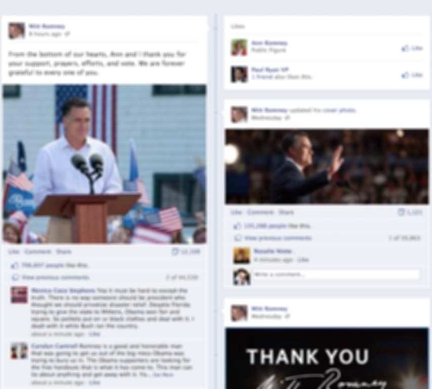

Mitt Romney
Likes on Facebook
This is an apolitical page. I find this
unliking
phenomena fascinating. It should not be taken as a reflection of political views or affiliation.
Follow @donohoe
Tweet
